ചതുരക്കണക്കുകൾ
10 ചതുരക്കണക്കുകൾ സമചതുരങ്ങളും ചതുരങ്ങളും ചെറിയ സമചതുരങ്ങൾ ചേർത്തുവച്ച്, വലിയ ചതുരങ്ങൾ ഉണ്ടാക്കുകയാണ് കുട്ടികൾ.
111


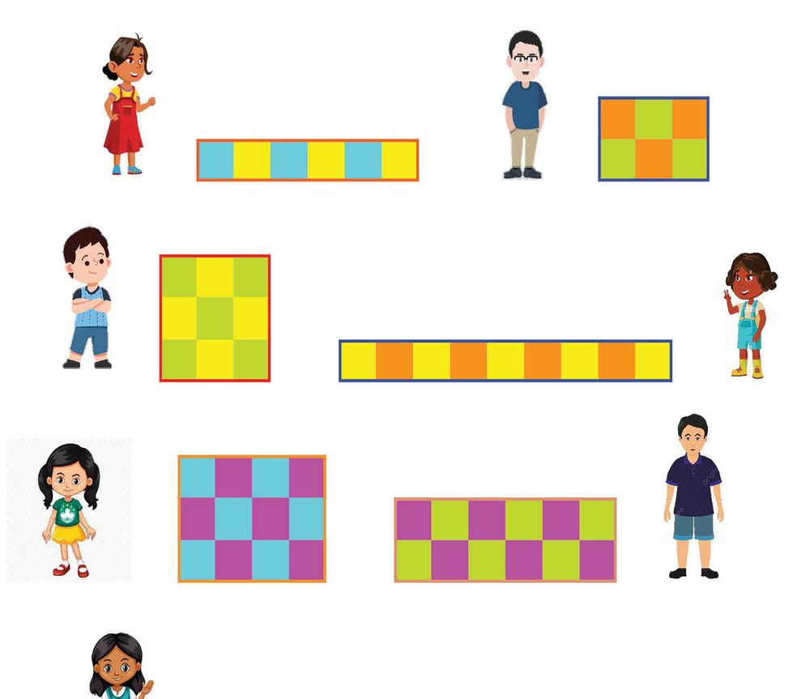
ചതുരക്കണക്കുകൾ
10 ചതുരക്കണക്കുകൾ സമചതുരങ്ങളും ചതുരങ്ങളും ചെറിയ സമചതുരങ്ങൾ ചേർത്തുവച്ച്, വലിയ ചതുരങ്ങൾ ഉണ്ടാക്കുകയാണ് കുട്ടികൾ.
111


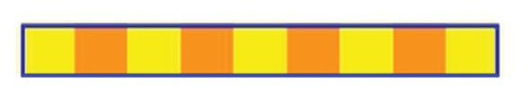


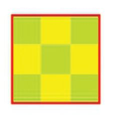

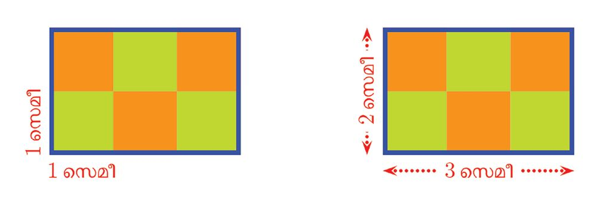
ഗണിതം സ്റ്റാൻഡേർഡ് V
കൊൊച്ചു സമചതുരങ്ങളുടെയെല്ലാം വശത്തിന്റെ നീളം 1 സെന്റിമീറ്ററാണ്. ചിത്രത്തിലെ ചതുരങ്ങളുടെയെല്ലാം നീളവും ഉയരവും എഴുതാമോോ ? ഉദാഹരണമായി ഈ ചതുരം നോോക്കുക:
ഈ ചതുരത്തിന്റെ നീളം 3 സെന്റിമീറ്റർ, ഉയരം 2 സെന്റിമീറ്റർ ഇതുപോോലെ എല്ലാ ചതുരങ്ങളുടെയും നീളവും ഉയരവും കണക്കാക്കുക. ചതുരം
112
നീളം
ഉയരം
3
2


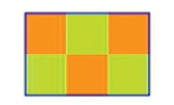
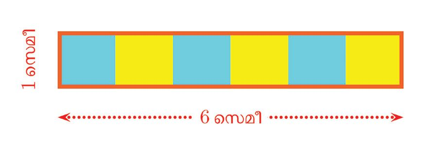
ചതുരക്കണക്കുകൾ
അതിരിന്റെ അളവ് കുട്ടികൾ ഉണ്ടാക്കിയ എല്ലാ ചതുരങ്ങളുടെയും അരികുകളിൽ നിറമുള്ള നൂൽ മുറിച്ച് ഒട്ടിച്ചിട്ടുണ്ട്. ആദ്യയത്തെ ചതുരത്തിന് ചുറ്റുംം ഒട്ടിക്കാൻ ആകെ എത്ര നൂൽ വേണ്ടിവന്നു ?
താഴത്തെയും മുകളിലെയും വശങ്ങൾക്ക് 6 സെന്റിമീറ്റർ വീതം; ഇടതും വലതും വശങ്ങൾക്ക് 1 സെന്റിമീറ്റർ വീതം; ആകെ 6 + 6 + 1 + 1 = 14 സെന്റിമീറ്റർ. ചതുരത്തിന്റെ ചുറ്റുമായി എടുക്കുന്ന ഈ അളവിനെ ചതുരത്തിന്റെ ചുറ്റളവ് (perimeter) എന്നാണ് പറയുന്നത്. അതായത്, മുകളിലെ ചിത്രത്തിലെ ചതുരത്തിന്റെ ചുറ്റളവ് 14 സെന്റിമീറ്റർ. ഇനി നമ്മുടെ പട്ടികയിൽ, ഓരോോ ചതുരത്തിന്റെയും ചുറ്റളവുകൂടി കണക്കാക്കി എഴുതാമല്ലലോ. ചതുരം
113
നീളം
ഉയരം
ചുറ്റളവ്
6
1
14
3
2
3
3
9
1
4
3
6
2
12
1


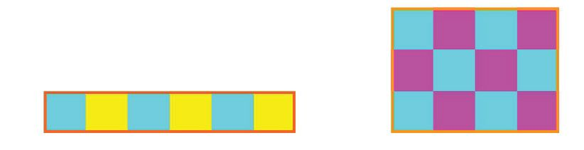
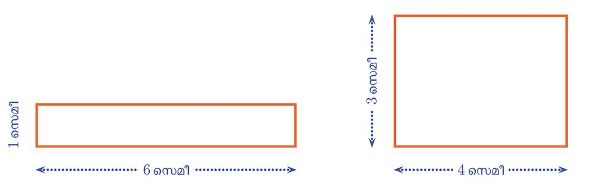
ഗണിതം സ്റ്റാൻഡേർഡ് V
അകത്തെ അളവ് ഇനി പട്ടികയിലെ ഒന്നാമത്തെയും അഞ്ചാമത്തെയും ചതുരങ്ങൾ നോോക്കൂ:
രണ്ട് ചതുരത്തിന്റെയും ചുറ്റളവ് 14 സെന്റിമീറ്റർ അല്ലേ ? പക്ഷേ ഇടത്തെ ചതുരം 6 സമചതുരങ്ങൾ ചേർത്തുവച്ചതാണ്; വലത്തെ ചതുരം 12 സമചതുരങ്ങളും. അപ്പപോൾ, 14 സെന്റിമീറ്റർ നീളമുള്ള രണ്ട് നൂലുകൾ, രണ്ട് തരത്തിൽ മുറിച്ച് ചതുരങ്ങളുടെ അതിരുകൾ ഉണ്ടാക്കിയാൽ, ചതുരങ്ങളുടെ ഉള്ളിലുള്ള സ്ഥലത്തിന്റെ അളവ് ഒരുപോോലെ ആയിരിക്കില്ല.
മറ്ററൊരുതരത്തിൽ പറഞ്ഞാൽ, ഇടത് ചതുരത്തെക്കാൾ കൂടുതൽ പരന്നതാണ് വലത് ചതുരം. നീളമളക്കാൻ, സെന്റിമീറ്റർ, മീറ്റർ എന്നിങ്ങനെ മുൻകൂട്ടി നിശ്ചയിച്ച നീളങ്ങൾ ഉപയോോഗിക്കുന്നതുപോോലെ, മുൻകൂട്ടി നിശ്ചയിച്ച സമചതുരങ്ങൾ ഉപയോോഗിച്ചാണ് ‘പരപ്പ്’ അളക്കുന്നത്. ഉദാഹരണമായി, വശങ്ങളുടെ നീളം 1 സെന്റിമീറ്റർ ആയ സമചതുരത്തിന്റെ പരപ്പളവ് 1 ചതുരശ്രസെന്റിമീറ്റർ (square centimetre) എന്നു പറയുന്നു.
ഇത്തരം രണ്ട് സമചതുരങ്ങൾ ചേർത്തുവച്ച ചതുരത്തിന്റെ പരപ്പളവ് 2 ചതുരശ്രസെന്റിമീറ്റർ, മൂന്നെണ്ണം ചേർത്തുവച്ച ചതുരത്തിന്റെ പരപ്പളവ് 3 ചതുരശ്രസെന്റിമീറ്റർ എന്നിങ്ങനെയാണ് കണക്കാക്കുന്നത്.
114


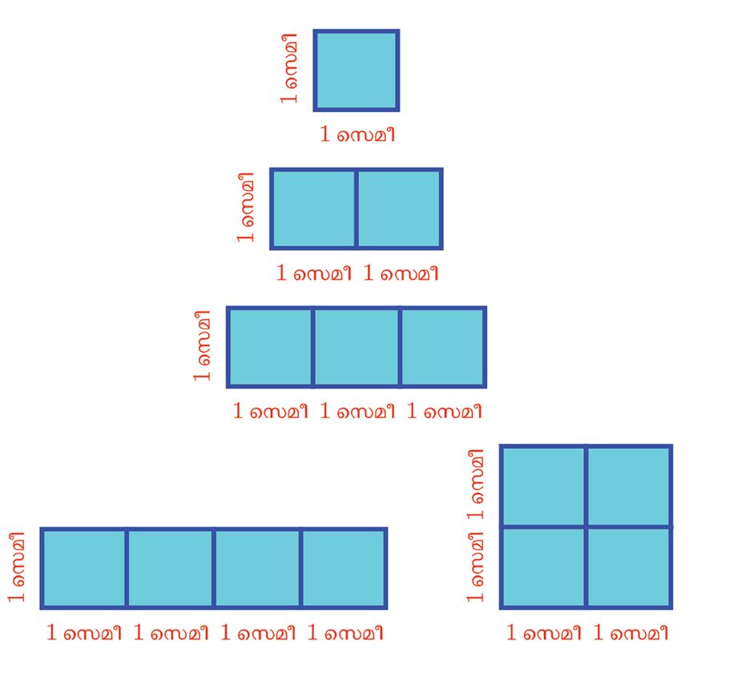


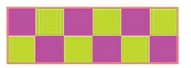

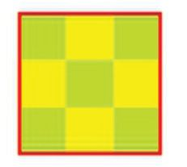

ചതുരക്കണക്കുകൾ
പരപ്പളവ് 1 ചതുരശ്രസെന്റിമീറ്റർ. പരപ്പളവ് 2 ചതുരശ്രസെന്റിമീറ്റർ. പരപ്പളവ് 3 ചതുരശ്രസെന്റിമീറ്റർ.
പരപ്പളവ് 4 ചതുരശ്രസെന്റിമീറ്റർ.
അപ്പപോൾ ഇനി ആദ്യയം കണ്ട ചതുരങ്ങളുടെ പട്ടികയിൽ പരപ്പളവും കൂടി ചേർക്കാം: ചതുരം
നീളം ഉയരം ചുറ്റളവ് പരപ്പളവ് സെമീ സെമീ സെമീ ചസെമീ
115
6
1
3
2
3
3
9
1
4
3
6
2
12
1
14
6


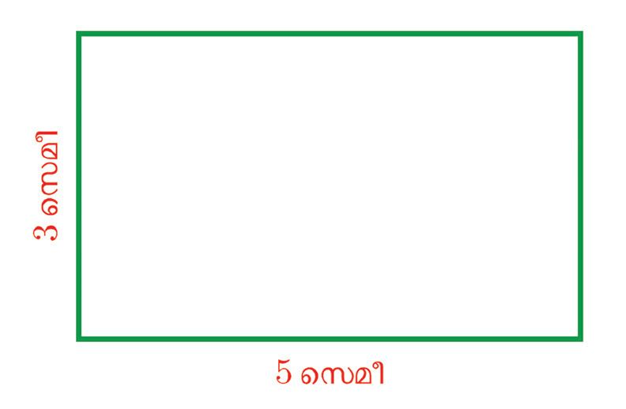
ഗണിതം സ്റ്റാൻഡേർഡ് V
വലിയ ചതുരങ്ങളുടെ (കളിക്കളങ്ങൾ, കെട്ടിടങ്ങളിലെ മുറികൾ, ...) വശങ്ങൾ അളക്കുന്നത് മീറ്ററിലാണല്ലലോ. ഇത്തരം ചതുരങ്ങളുടെ പരപ്പളവ് കണക്കാക്കുന്നത്, വശങ്ങളുടെ നീളം 1 മീറ്റർ ആയ സമചതുരത്തിന്റെ പരപ്പളവിന്റെ അടിസ്ഥാനത്തിലാണ്. വശങ്ങളുടെ നീളം 1 മീറ്റർ ആയ സമചതുരത്തിന്റെ പരപ്പളവ് 1 ചതുരശ്രമീറ്റർ (square metre) എന്ന് പറയുന്നു.
ചെറിയ ചതുരങ്ങളുടെ കാര്യത്തിലെന്നപോോലെ, ഇത്തരം രണ്ട് സമചതുരങ്ങൾ ചേർത്തുവച്ച ചതുരത്തിന്റെ പരപ്പളവ് 2 ചതുരശ്രമീറ്റർ, മൂന്നെണ്ണം ചേർത്തുവച്ച ചതുരത്തിന്റെ പരപ്പളവ് 3 ചതുരശ്രമീറ്റർ എന്നിങ്ങനെയാണ് കണക്കാക്കുന്നത്.
ചതുരക്രിയകൾ ഈ ചതുരം നോോക്കൂ:
ഇതിന്റെ ചുറ്റളവ് എത്രയാണ് ? വശങ്ങളുടെ നീളം ഓരോോന്നായി കൂട്ടിയാൽ, 5 + 3 + 5 + 3 = 16
അങ്ങനെ ചുറ്റളവ് 16 സെന്റിമീറ്റർ എന്ന് കണക്കാക്കാം. അല്ലെങ്കിൽ, ഒരേ നീളമുള്ള വശങ്ങൾ ഒന്നിച്ചെടുത്ത്, 5 ന്റെ രണ്ട് മടങ്ങും, 3 ന്റെ രണ്ട് മടങ്ങുമായി കൂട്ടാം. (5 × 2) + (3 × 2) = 10 + 6 = 16
മറ്റെന്തെങ്കിലും വഴിയുണ്ടോോ ? 5 ന്റെ രണ്ട് മടങ്ങും, 3 ന്റെ രണ്ട് മടങ്ങും ചേർന്നാൽ 8 ന്റെ രണ്ട് മടങ്ങായില്ലേ ? (5 × 2) + (3 × 2)
= (5 + 3) × 2
= 8 × 2 = 16
116


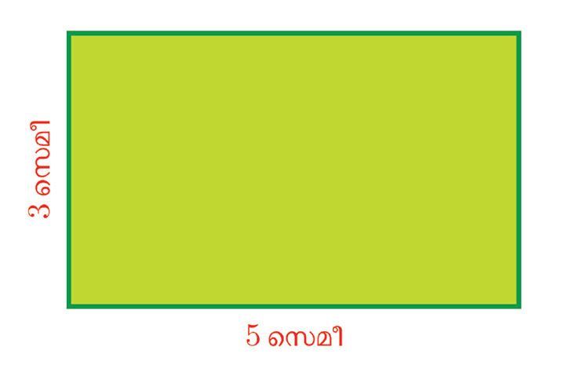
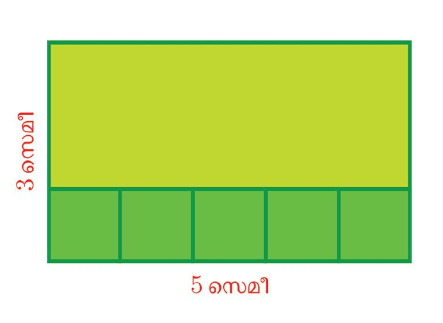
ചതുരക്കണക്കുകൾ
വശങ്ങളുടെ നീളം 10 സെന്റിമീറ്ററുംം 5 സെന്റിമീറ്ററുംം ആയ ചതുരത്തിന്റെ ചുറ്റളവ് ഈ രീതിയിൽ കണക്കാക്കാമോോ ? പൊൊതുവേ പറഞ്ഞാൽ: ചതുരത്തിന്റെ ചുറ്റളവ്, വശങ്ങളുടെ നീളങ്ങളുടെ തുകയുടെ രണ്ടു മടങ്ങാണ്.
ഇതുപയോോഗിച്ച്, വശങ്ങളുടെ നീളം ചുവടെപ്പറയുന്നവ ആയ ചതുരങ്ങളുടെ ചുറ്റളവ് മനസ്സിൽത്തന്നെ കണക്കാക്കാമല്ലലോ. (i) 6 സെന്റിമീറ്റർ, 3 സെന്റിമീറ്റർ (ii) 13 സെന്റിമീറ്റർ, 7 സെന്റിമീറ്റർ (iii) 6 സെന്റിമീറ്റർ, 6 സെന്റിമീറ്റർ (iv) 25 മീറ്റർ, 15 മീറ്റർ (v) 34 മീറ്റർ, 16 മീറ്റർ
ഇനി നേരത്തെ കണ്ട ചതുരത്തിന്റെ പരപ്പളവ് കണക്കാക്കുന്നതെങ്ങനെ ?
അതിന്, വശങ്ങളുടെ നീളം 1 സെന്റിമീറ്ററായ സമചതുരങ്ങൾ എത്രയെണ്ണം ഇതിനുള്ളിൽ നിറയ്കക്കകാം എന്നു കണ്ടുപിടിക്കണം. ആദ്യയം ഇത്തരം ചതുരങ്ങൾ താഴത്തെ വശത്തിനോോട് ചേർത്ത് വച്ചുനോോക്കാം: എത്രയെണ്ണം വയ്കക്കകാം ?
117


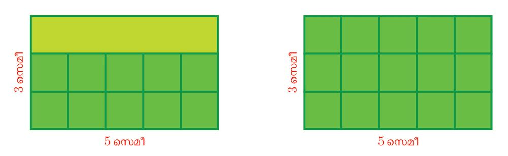
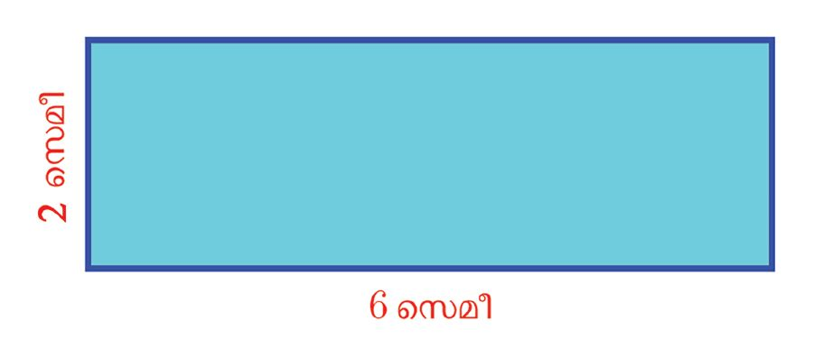
ഗണിതം സ്റ്റാൻഡേർഡ് V
ഇതുപോോലെ എത്ര വരികൾ മുകളിലേക്കു വയ്കക്കകാം ?
അപ്പപോൾ ചതുരത്തിന്റെ പരപ്പളവ് എത്രയാണ് ? ഓരോോ വരിയിലും 5 സമചതുരങ്ങൾ വീതം 3 വരികൾ. ആകെ 5 ന്റെ 3 മടങ്ങ്, 15 പരപ്പളവ്, 15 ചതുരശ്രസെന്റിമീറ്റർ. ഇതുപോോലെ ചുവടെയുള്ള ചതുരത്തിന്റെ പരപ്പളവ് കണക്കാക്കാമോോ ?
വശങ്ങളുടെ നീളം 1 സെന്റിമീറ്റർ ആയ സമചതുരങ്ങൾ, താഴത്തെ വശത്തതോടുചേർത്ത് ചതുരത്തിനുള്ളിൽ എത്രയെണ്ണം വയ്കക്കകാം ? ഇത്തരം എത്ര വരികൾ മുകളിലേക്ക് വയ്കക്കകാം ? ആകെ എത്ര സമചതുരം ? അപ്പപോൾ പരപ്പളവ് എത്രയാണ് ? ഇനി ചതുരത്തിന്റെ പരപ്പളവ് കാണാനുള്ള ക്രിയ പൊൊതുവെ എങ്ങനെ പറയാം ? ചതുരത്തിന്റെ പരപ്പളവ്, വശങ്ങളുടെ നീളങ്ങളുടെ ഗുണനഫലമാണ്.
ഇവിടെ ഓർക്കേണ്ട കാര്യയം, വശങ്ങളുടെ നീളം സെന്റിമീറ്ററിലാണ് എടുക്കുന്നതെങ്കിൽ, പരപ്പളവ് ചതുരശ്രസെന്റിമീറ്ററിലാണ്; വശങ്ങളുടെ നീളം മീറ്ററിലാണ് എടുക്കുന്നതെങ്കിൽ, പരപ്പളവ് ചതുരശ്രമീറ്ററിലാണ്.
118


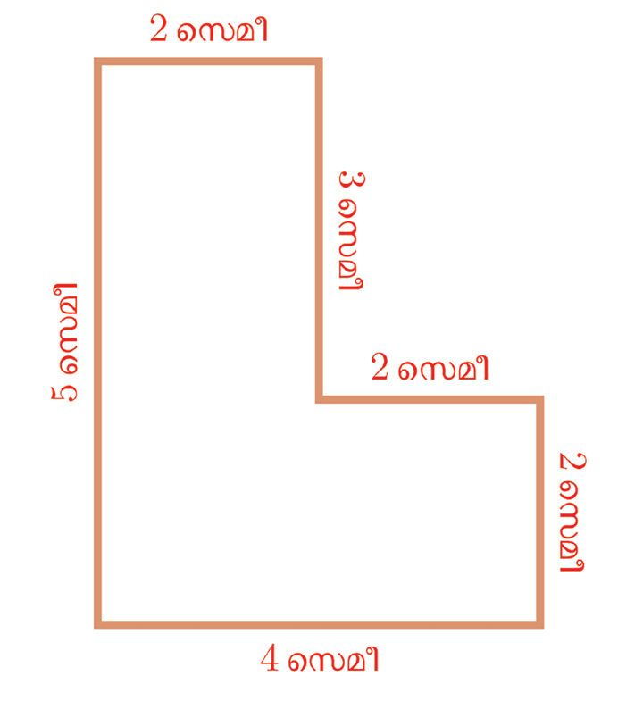
ചതുരക്കണക്കുകൾ
ഈ കണക്കുകൾ ചെയ്തുനോോക്കൂ (1) വശങ്ങളുടെ നീളം ചുവടെപ്പറയുന്നവ ആയ ചതുരങ്ങളുടെ പരപ്പളവ്
കണക്കാക്കുക. (i) 6 സെന്റിമീറ്റർ, 3 സെന്റിമീറ്റർ
(ii) 12 സെന്റിമീറ്റർ, 5 സെന്റിമീറ്റർ
(iii) 10 സെന്റിമീറ്റർ, 10 സെന്റിമീറ്റർ (iv) 8 മീറ്റർ, 5 മീറ്റർ (v) 11 മീറ്റർ, 7 മീറ്റർ (2) ചുവടെപ്പറയുന്ന പരപ്പളവും ചുറ്റളവും ഉള്ള ചതുരങ്ങൾ വരയ്ക്കുക: (i) 12 ചതുരശ്രസെന്റിമീറ്റർ, 14 സെന്റിമീറ്റർ (ii) 12 ചതുരശ്രസെന്റിമീറ്റർ, 16 സെന്റിമീറ്റർ (iii) 12 ചതുരശ്രസെന്റിമീറ്റർ, 26 സെന്റിമീറ്റർ (iv) 5 ചതുരശ്രസെന്റിമീറ്റർ, 12 സെന്റിമീറ്റർ (v) 8 ചതുരശ്രസെന്റിമീറ്റർ, 12 സെന്റിമീറ്റർ (vi) 9 ചതുരശ്രസെന്റിമീറ്റർ, 12 സെന്റിമീറ്റർ
മറ്റുചില രൂപങ്ങൾ ഈർക്കിൽ കഷണങ്ങൾ കൊൊണ്ടുണ്ടാക്കിയ ഒരു രൂപം നോോക്കൂ.
ഈ രൂപം ഉണ്ടാക്കാൻ എത്ര നീളത്തിലുള്ള ഈർക്കിൽ വേണം ? എല്ലാറ്റിന്റെയും നീളം പറഞ്ഞിട്ടുണ്ടല്ലലോ ?
119


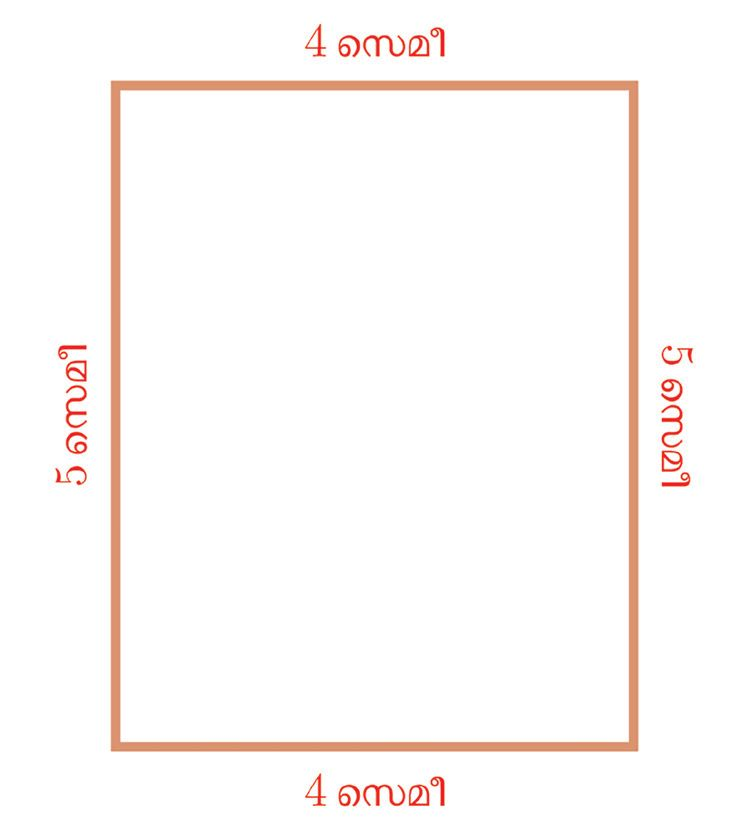
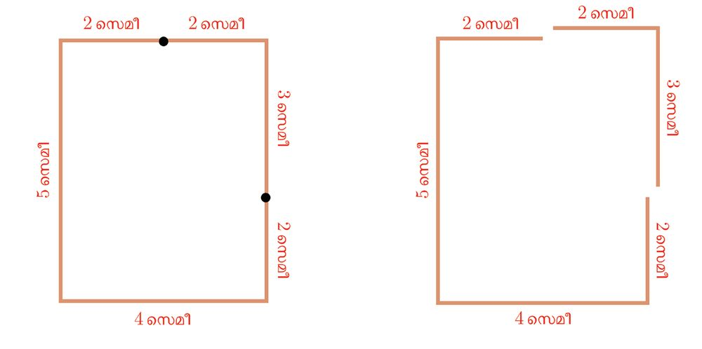
ഗണിതം സ്റ്റാൻഡേർഡ് V
എല്ലാം കൂട്ടിയാൽ 4 + 5 + 2 + 3 + 2 + 2 = 18
അതായത് ആകെ 18 സെന്റിമീറ്റർ നീളത്തിൽ ഈർക്കിൽ മുറിച്ച്, ഈ നീളങ്ങളുള്ള ആറ് കഷണങ്ങളായി മുറിച്ചാൽ മതി. മറ്ററൊരു രീതിയിലും ഈ രൂപം ഉണ്ടാക്കാം, ആദ്യയം ഇങ്ങനെയൊൊരു ചതുരം ഉണ്ടാക്കുക.
മുകൾവശത്തിലും, വലതുവശത്തിലും, ചുവടെ കാണിച്ചിരിക്കുന്നതുപോോലെ നീളങ്ങൾ അടയാളപ്പെടുത്തി ഒടിച്ചു മാറ്റുക.
120


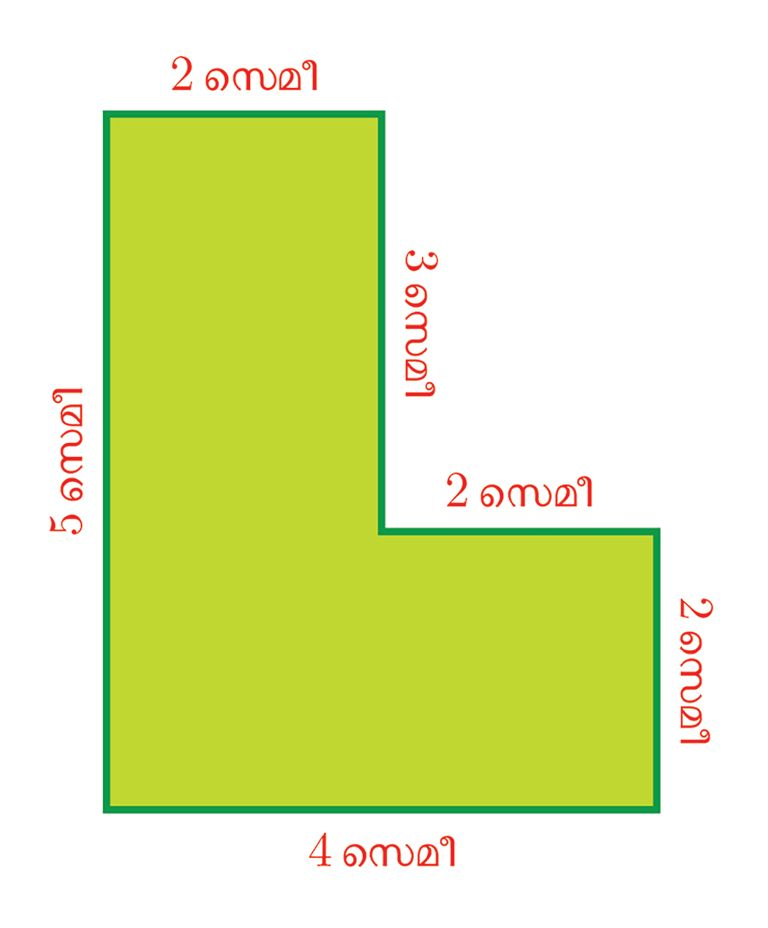
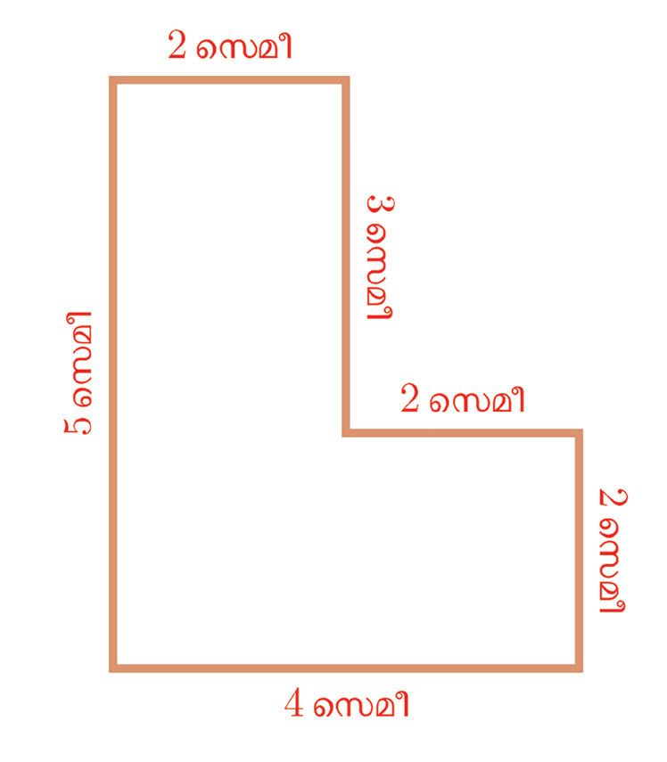
ചതുരക്കണക്കുകൾ
ഇനി മുറിച്ച് മാറ്റിയ കഷണങ്ങൾ ചുവടെ കാണുന്നതുപോോലെ തിരിച്ചു വച്ചാൽ, ആദ്യയം കണ്ട രൂപമായില്ലേ ?
ചതുരമുണ്ടാക്കാൻ ഉപയോോഗിച്ച ഈർക്കിൽ മുഴുവൻ ഈ രൂപമുണ്ടാക്കാനും ഉപയോോഗിച്ചല്ലലോ. കണക്കിന്റെ ഭാഷയിൽ പറഞ്ഞാൽ, ആദ്യമുണ്ടാക്കിയ ചതുരത്തിനും ഈ രൂപത്തിനും ഒരേ ചുറ്റളവാണ്. ഇനി ഇതേ രൂപം കടലാസിൽ വെട്ടിയെടുത്താലോോ ?
ഇതിന്റെ പരപ്പളവ് എത്രയാണ് ?
121


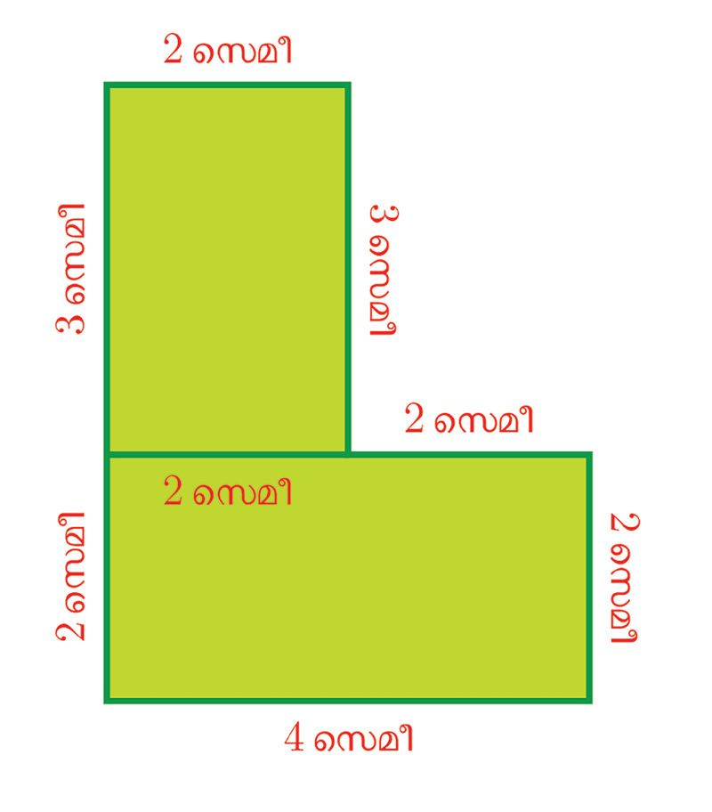
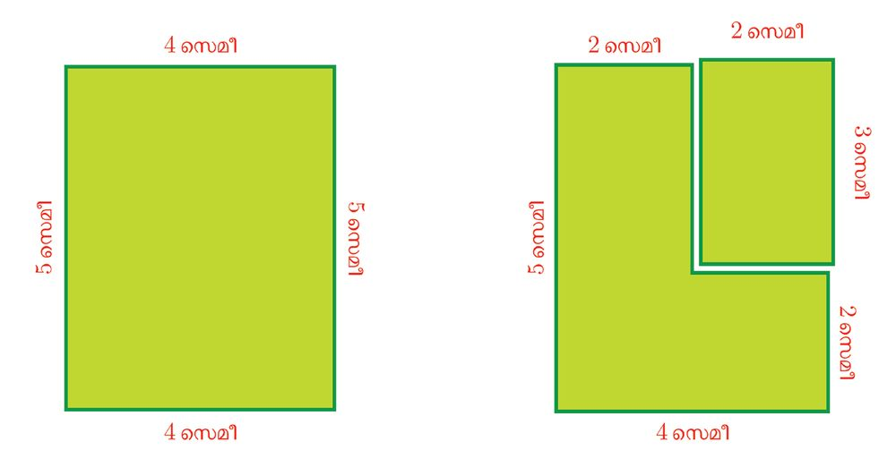
ഗണിതം സ്റ്റാൻഡേർഡ് V
ഇതിനെ രണ്ടു ചതുരങ്ങൾ ചേർത്തുവച്ചതായി കാണാമല്ലലോ.
അപ്പപോൾ മൊൊത്തം പരപ്പളവ് കണക്കാക്കാൻ, ഈ രണ്ട് ചതുരങ്ങളുടെ പരപ്പളവുകൾ കൂട്ടണം: (4 × 2) + (2 × 3) = 8 + 6 = 14
ഈ രൂപത്തിന്റെ പരപ്പളവ് 14 ചതുരശ്രസെന്റിമീറ്റർ. മറ്ററൊരു വിധത്തിലും ഇതു കണക്കാക്കാം. ഈ രൂപമുണ്ടാക്കാൻ, ഒരു വലിയ ചതുരം വെട്ടിയെടുത്ത്, അതിൽനിന്ന് ഒരു ചെറിയ ചതുരം വെട്ടി മാറ്റിയാലും മതി:
122


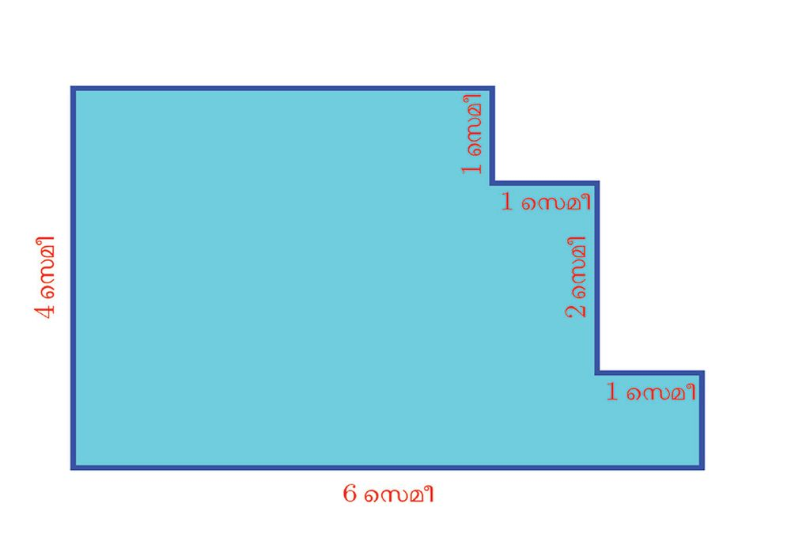
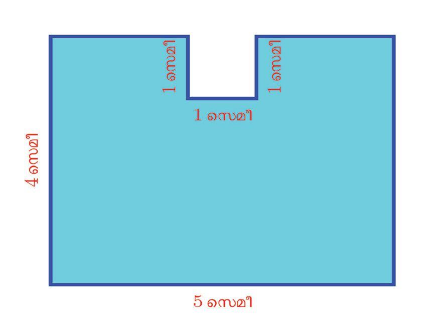
ചതുരക്കണക്കുകൾ
അപ്പപോൾ മിച്ചമുള്ള ഭാഗത്തെ പരപ്പളവ്, വലിയ ചതുരത്തിന്റെ പരപ്പളവിൽ നിന്ന് ചെറിയ ചതുരത്തിന്റെ പരപ്പളവ് കുറച്ചതാണല്ലലോ. (4 × 5) − (2 × 3) = 20 – 6 = 14
ഇവിടെ ഒരു കാര്യയം ശ്രദ്ധിച്ചചോ ? ഒരു ചതുരത്തിൽനിന്ന് ചെറിയൊൊരു ചതുരം വെട്ടിമാറ്റിയപ്പപോൾ പരപ്പളവ് കുറഞ്ഞെങ്കിലും, ചുറ്റളവിൽ മാറ്റമൊൊന്നും വന്നില്ല. പരപ്പളവ് കുറയുകയും, എന്നാൽ ചുറ്റളവ് കൂടുകയും ചെയ്യുന്ന തരത്തിൽ, ഒരു ചതുരത്തിൽനിന്ന് മറ്ററൊരു ചതുരം വെട്ടിയെടുക്കാൻ പറ്റുമോോ ? ആലോോചിച്ചുനോോക്കൂ. ചുവടെയുള്ള രൂപങ്ങളുടെയെല്ലാം പരപ്പളവും ചുറ്റളവും കണക്കാക്കുക.
123


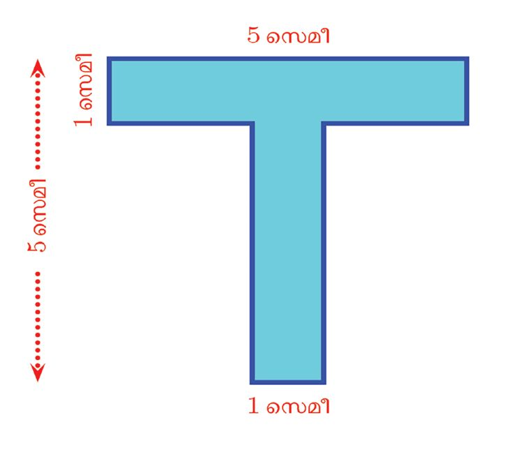
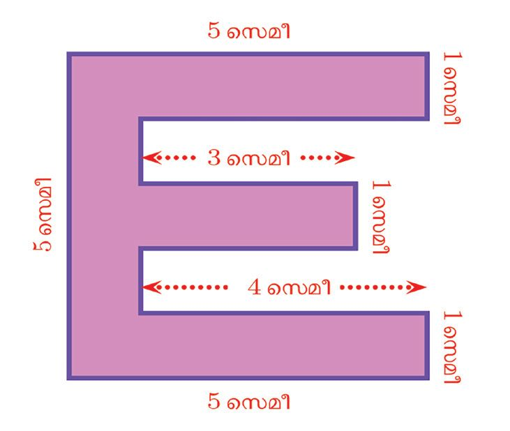
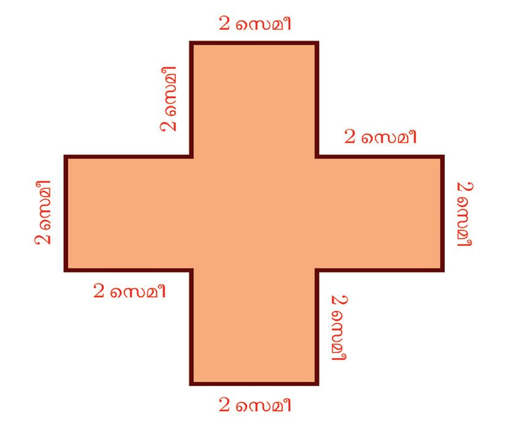
ഗണിതം സ്റ്റാൻഡേർഡ് V
124